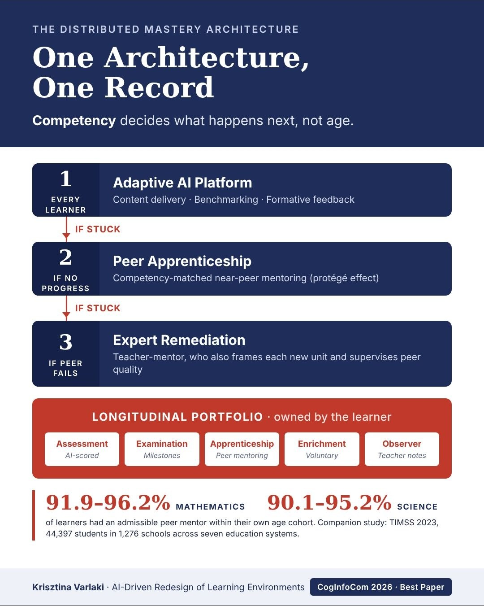

Dr. Krisztina Varlaki
Doctoral Researcher in EdTech | Developing the Distributed Mastery Architecture for Structural Education Reform | Bridging Pedagogical AI & Learning Design
- Best Paper Award · CogInfoCom 2026
- Cognitive Infocommunications
- AI in Education
- Peer Learning
About
Krisztina Varlaki is an education researcher based in Israel. Her work asks how AI can restructure the way schools organise learning, rather than add another tool to the existing classroom. She holds a Doctor of Law (dr. jur.) degree from the University of Miskolc and a teaching qualification in English, and brings formal and fuzzy logic to questions of educational design.
Her current work is the Distributed Mastery Architecture (DMA), a model in which competency, not age, decides what a learner does next. Learning happens on an adaptive AI platform. A learner who stalls is paired with a near-peer mentor who has recently mastered the unit, and the teacher steps in where peer support also fails. Each step feeds a longitudinal portfolio owned by the learner.
She first presented at CogInfoCom in 2018, with a paper on hybrid legal decision-making that won that year's Wolters Kluwer Jogászdíj. She is open to collaboration on education reform research.
Research

The Distributed Mastery Architecture
One architecture, one record
Most school systems still run on an industrial-era design: uniform pace, age-based classes, and assessment that arrives late and explains little. The DMA treats the learning environment itself as a cognitive system. It draws on Bloom's mastery learning, Vygotsky's zone of proximal development, and the protégé effect, in which tutors gain at least as much as the learners they help.
Current work extends the architecture to governance: who is accountable when an AI system decides how a learner is supported, and what that decision must make explainable, contestable and auditable.
Publications
-
2026 · in pressAI-Driven Redesign of Learning Environments: A Cognitive Infocommunications Framework for Structural Education Reform
Varlaki, K. Proceedings of the 17th International Conference on Cognitive Infocommunications (CogInfoCom 2026), Springer.
Best Paper Award PDF (accepted manuscript)This is an Accepted Manuscript version of the following work: Varlaki, K., AI-Driven Redesign of Learning Environments: A Cognitive Infocommunications Framework for Structural Education Reform, CogInfoCom 2026 Proceedings, Springer. The final authenticated version will be available online at the publisher's website; a link will be added here on publication.
-
2026 · registered reviewDoes the Tutor–Tutee Competency Gap Moderate the Academic Effects of Peer and Cross-Age Tutoring? A Role-Specific Meta-Analysis
Varlaki, K. Public registration, Open Science Framework.
-
2018A Hybrid Decision Making Focused on Legal Processes
Varlaki, K., & Baranyi, P. 9th IEEE International Conference on Cognitive Infocommunications (CogInfoCom), Budapest, pp. 411–416.
Wolters Kluwer Jogászdíj 2018 DOI
Awards
Best Paper Award, CogInfoCom 2026
17th International Conference on Cognitive Infocommunications, 12–13 October 2026, Hong Kong, for "AI-Driven Redesign of Learning Environments".
Wolters Kluwer Jogászdíj
Dispute resolution category, for a hybrid decision-support system that predicts litigation outcomes. Interview (Hungarian)